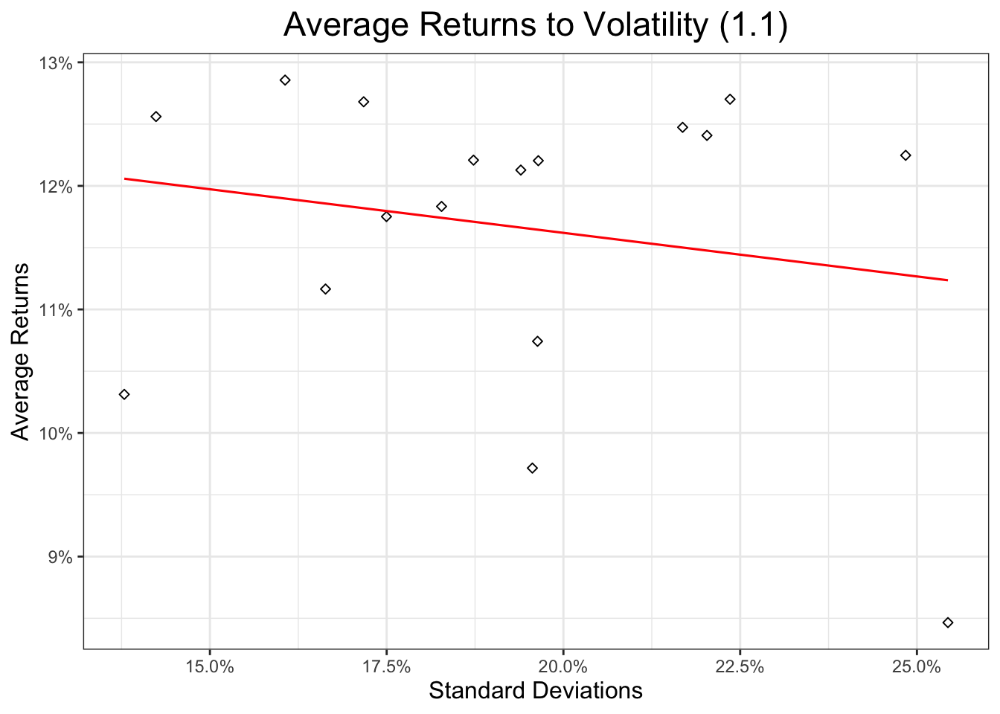
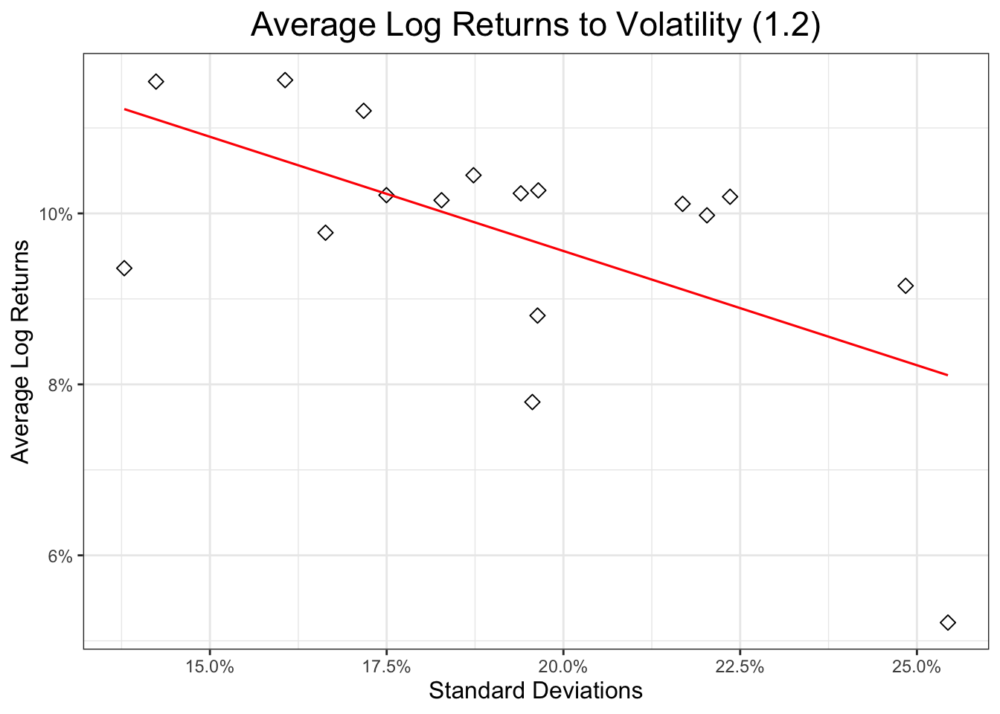
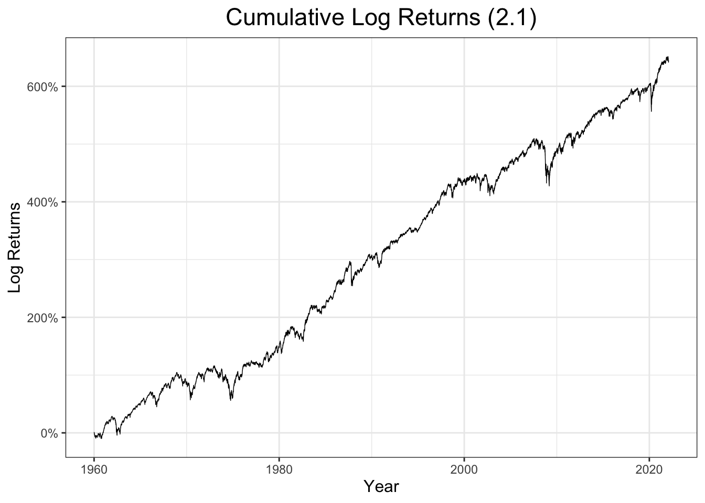
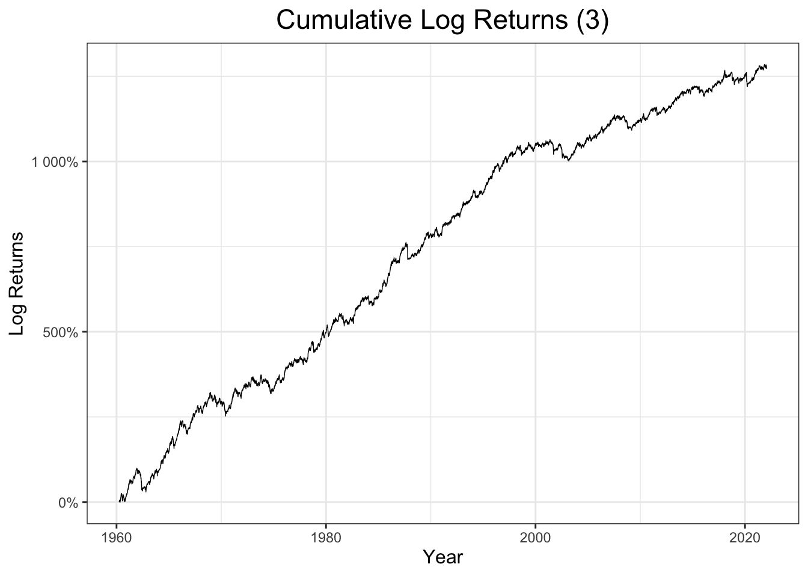
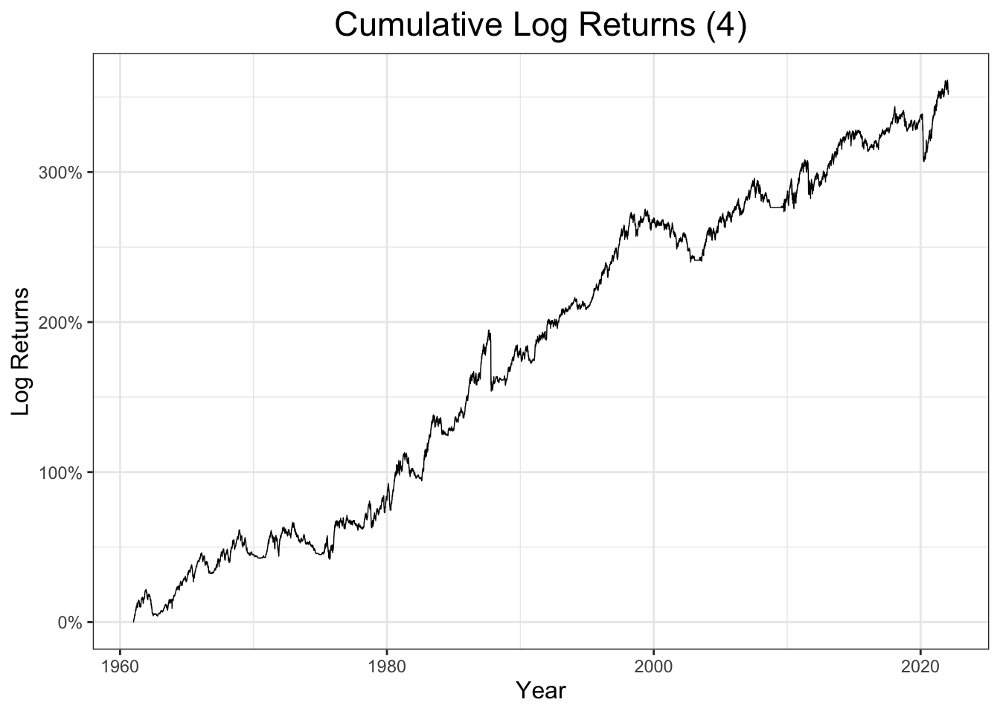
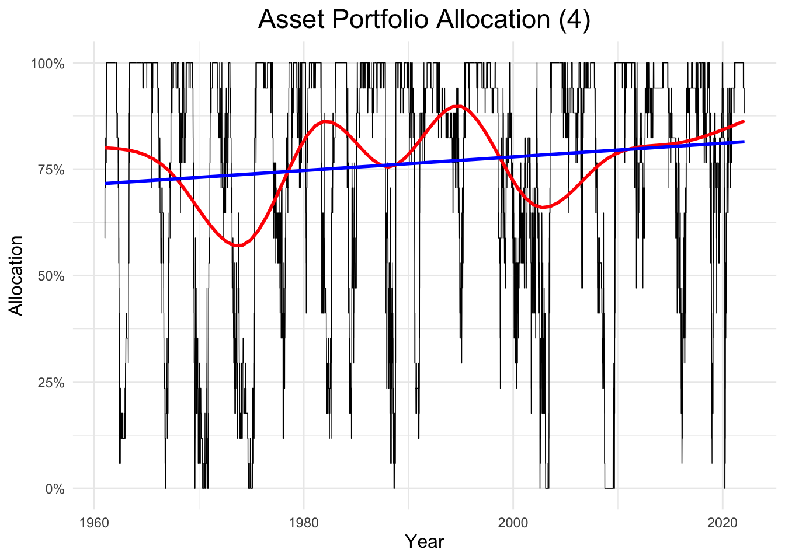

This is a mandatory assignment for a course Quantitative Risk and Asset Management handed in 2022 at Oslo BI Norwegian Business School, transformed into a readable notebook form.
The data used has daily returns for 17 US industries (from the Kenneth French database, value weighted) from 1926 to 2022.
data <-read.csv("/Users/aleksi/BI Quantitative Risk and Asset Management/Industry17PortfoliosDaily.csv", skip =9, header = T)head(data)
1.1: On average, do more volatile industries have higher average log returns? And higher average returns?
# Extracting the data from 1960 to 2022 from the full datasetdata60.22<- data[data[, 1] >"1960-01-01", ] # Computing the log of the 1960-2022 datasetlog.data.60.22<-data.frame(data60.22$date, log(data60.22[, -1] +1) )# Average annualized returns for every industryavg.ret60.22<-colMeans(data60.22[, -1] ) *252# Annualized Volatility (standard deviation) for every industryindustry.std60.22<-apply(data60.22[, -1], 2, sd) *sqrt(252) # Defining Log returns for every industry, daily basislog.ret60.22<-apply((data60.22[, -1] +1), 2, log) # + 1 to compute log returns# Checking for NaNs and infinite values in the log returns:which(is.infinite(log.ret60.22)) # no infinite values
integer(0)
which(is.nan(log.ret60.22)) # no NaNs
integer(0)
# Computing annualized average log returns for every industryavg.log.ret60.22<-colMeans(log.ret60.22, na.rm = T) *252# Checking for non Gaussianity in the data 1960 - 2022skew <-apply(data60.22[, -1], 2, skewness ) kurt <-apply(data60.22[, -1], 2, kurtosis )mean(kurt)
[1] 17.25315
median(kurt)
[1] 16.74064
Warning: Using `size` aesthetic for lines was deprecated in ggplot2 3.4.0.
ℹ Please use `linewidth` instead.
`geom_smooth()` using formula = 'y ~ x'


Question 2
2.1 - Plot the Cumulative log returns for an equal-weighted portfolio (each industry with weight 1/17). Compute mean, std, and Sharpe ratio for returns.
# Computing the portfolio average returns over the 1960-2022 periodbal.port.weights <-rep(1/17,17) bal.port.ret <-rowSums(bal.port.weights * data60.22[, -1]) bal.port.avg.ret <-mean(bal.port.ret) *252# Portfolio standard deviationbal.port.std <-sd(bal.port.ret)*sqrt(252)# Sharpe Ratiobal.port.Sharpe <- bal.port.avg.ret / bal.port.std# Computing the cumulative log returns and then plotting bal.port.log.ret <-log(1+ bal.port.ret) bal.port.cum.log.ret <-cumsum(bal.port.log.ret)
### Plot 4: Cumulative Log returns of the Equally weighted portfolio x1 <-data.frame(data60.22$date)y1 <-data.frame(bal.port.cum.log.ret)M3 <-cbind(x1, y1)p3 <-ggplot(M3, aes(x = data60.22$date, y = bal.port.cum.log.ret)) +geom_line(size =0.25) +labs(title ="Cumulative Log Returns (2.1)", x ="Year", y ="Log Returns") +theme_bw() +theme(axis.title =element_text(size =12),plot.title =element_text(hjust =0.5)) +scale_y_continuous(labels = scales :: percent)p3 +theme(plot.title =element_text(size =17))

Question 2.2 - Repeat 2.1, but now weight each industry by the inverse of its full-sample standard deviation, with weights normalized so they sum up to one.
# Computing the full sample industry annualized standard deviationindustry.std.full.sample <-apply(data[, -1], 2, sd) # Normalizing the weights to sum up to 1normalizer <- (1/sum(industry.std.full.sample)) # normalizing coefficientnorm.port.weights <- industry.std.full.sample * normalizer # normalized weightssum(norm.port.weights) # they sum up to 1
Question 2.3 - Repeat (1), but now each month select the 6 industries (each allocated 1/6 of capital) with the highest return in the past 12 months (computed as\([ P(i;t) / P(i;t-250) ] - 1)\).
# Generating year.month variable for the 1960-2022 dataset, so that then we can# select directly both the year and month at the same timeyear.mont <-substring(data60.22$date, 1, 7) # New dataframe without the 'day' index in the date variabledata.year.mont60.22<-data.frame(year.mont = year.mont, data60.22[ , -1])# Aggregating the daily returns in the new dataframe by month to have cumulative # log returns for every monthlog.data.year.mont60.22<-data.frame(year.mont = year.mont, log(data.year.mont60.22[,-1] +1) )month.rets <-aggregate(log.data.year.mont60.22[, -1], by =list(log.data.year.mont60.22$year.mont), FUN = sum)colnames(month.rets)[1] <-"year.mont"log.month.rets.no.date <- month.rets[, -1]
# For loop to get 12 months rolling window for the best 6 asset classes# Initializing all the variables we needrm(list)
Warning in rm(list): object 'list' not found
industry <-colnames(log.month.rets.no.date) # list of names of every industryn <-nrow(month.rets) # dimension for the loop, 745 iterationslist <-NULL# initializing the variable that will contain all the # names of the best 6 industriesfor (i in (13: n) ) { # starting from 13 since we start building portfolios from 1961/01 yearly.Rets <-NULL# initializing the yearly returns best.Six <-NULL# initialize the best.six vector that will be erased at every iterationfor (j in industry) { yearly.Rets[j] <-colSums( as.matrix(log.month.rets.no.date[ ( (i-12):(i-1) ) , j] )) } best.Six <-names(sort(yearly.Rets, decreasing =TRUE)[1:6]) # best six industries for the previous 12 months list <-rbind(list, best.Six) # creating the list with the names of the best industries}# Reducing the monthly returns dataset, excluding the first year of data (which# is lost in the for loop to find the first best six industries)# Aggregating simple returns to compute avg port retsmonth.rets2 <-aggregate(data.year.mont60.22[, -1], by =list(data.year.mont60.22$year.mont), FUN = sum)new.month.rets <- month.rets2[ (13:n), -1 ] # For loop that assigns 1/6 only when the 'industry' is in the 'list', meaning # that such industry was one of the best 6 performing in the previous 12 months# Initializing the weight matrix for the portfoliow <-data.frame() for (i in (1:nrow(list) ) ) {for (j in industry) { w[i,j] <- ( (1/6) * (j %in% list[i, ]) ) }}# Computing portfolio returns with the previously defined weightsbest.six.port.ret <-rowSums( w * new.month.rets )best.six.avg.port.ret <-mean(best.six.port.ret)*12# time 12 since those are monthly# returns that we want to annualize# Portfolio standard deviationbest.six.std <-sd(best.six.port.ret)*sqrt(12)# Portfolio Sharpe Ratiobest.six.sharpe <- best.six.avg.port.ret / best.six.std # Plotting the cumulative log portfolio returns# Converting months to date variables to plot them on the X axismonth.rets$year.mont <-as.Date(paste(month.rets$year.mont, '01', sep ='-') )best6.port.log.ret <-log(1+ best.six.port.ret) best6.port.cum.log.ret <-cumsum(best6.port.log.ret )
3.3 - Repeat the momentum strategy of Question 2.3, but instead of a constant, full allocation of capital, in each period (day), compute the covariance matrix between the 6 chosen industry in the previous 3 months (63 trading days), and use it to target a constant portfolio standard deviation of 20% annually.
# First, we need to find the best 6 asset classes in the previous 3 months # (63 trading days). We proceed as above, but using daily returns dataset rm(list2)
Warning in rm(list2): object 'list2' not found
industry2 <-colnames(data60.22[, -1]) # industry variable as before, with no daten2 <-nrow(data60.22) # dimension of the for looplist2 <-NULL# For loop that computes the daily list of the 6 best performing portfolios in # the 3 months beforefor (i in (64: n2) ) { # from 64 since we start from the first day of the 4th month daily.Rets <-NULL# initialize the daily returns best.Six <-NULLfor (j in industry2) { daily.Rets[j] <-colSums(as.matrix(log.data.60.22[ (i-63):(i-1) , j] )) # USE LOG DATA } best.Six <-names(sort(daily.Rets, decreasing =TRUE)[1:6]) list2 <-rbind(list2, best.Six)}# Covariances computed daily among the 6 best asset classes, on the 3 months # rolling window of data beforeN <-nrow(list2) cov.best.six <-array(rep(NA, 6*6*N), dim =c(6,6,N)) # initialize the 3-dimensional arrayfor (i in1:N ) { best.six.3.mont <- data.year.mont60.22[ (i:(i+62)), c(list2[i, ])] cov.best.six[ , , i] <-cov(best.six.3.mont)}# For loop that computes daily portfolio weights starting from an equally# weighted portfolio, but with weights that are updated every time as defined by# the formula [ 0.2/sigma_p_annualized ]weights.star <-NULLfor (i in (1:N) ) { initial.w <-rep(1/6, 6) # initial weights, equally weighted portfolio of 6 assets port.std.rebal <-sqrt( t(initial.w ) %*% cov.best.six[ , , (i)] %*% initial.w ) weights.star[i] <- (1/6)*( 0.2/ (port.std.rebal*sqrt(252) )) }# Last for loop that computes (as before) the weight matrix for every period. This# time weights are not constant and are extracted from the previous loop. A weight# different from zero is assigned only for those days and those industries that# were in the best 6 performing onesweights.star.matrix <-data.frame()for (i in (1: N ) ) {for (j in industry) { weights.star.matrix[i,j] <- ( weights.star[i] * (j %in% list2[i, ]) ) }}
# Portfolio returnsdata60.22.cut <- data60.22[-(1:63), -1 ] # removing the first 3 monthsport.ret.star <-rowSums(weights.star.matrix * data60.22.cut)avg.port.ret.star <-mean(port.ret.star) *252# Portfolio standard deviationport.ret.star.std <-sd(port.ret.star)*sqrt(252) # Portfolio Sharpe RatioSharpe.star <- avg.port.ret.star / port.ret.star.std
# Plotting portfolio cumulative log returnsport.log.ret.star <-log(port.ret.star +1)port.cum.log.ret.star <-cumsum(port.log.ret.star)### Plot 7: Cumulative Log returns of the 3 months momentum strategy portfolio, # with a target volatility of 20% per annumx4 <-data.frame(data60.22$date[-(1:63)])y4 <-data.frame(port.cum.log.ret.star)M6 <-cbind(x4, y4)p6 <-ggplot(M6, aes(x = data60.22$date[-(1:63)], y = port.cum.log.ret.star)) +geom_line(size =0.25) +labs(title ="Cumulative Log Returns (3)", x ="Year", y ="Log Returns") +theme_bw() +theme(axis.title =element_text(size =12),plot.title =element_text(hjust =0.5)) +scale_y_continuous(labels = scales :: percent)p6 +theme(plot.title =element_text(size =17))

Question 4
4.1 - Compute the equal-weighted portfolio as in Question 2.1 (on the 1960-2022 sample) and the yearly return in each industry as in Question 2.3. In each period (each day), compute the share alpha_t of industries with positive momentum (positive yearly return), and invest in the equal-weighted portfolio each month a share alpha_t, with the rest going to cash, which you should assume yields 3% annually
n.60.22<-nrow(data60.22) # Defining a new empty matrix to be filled in the loop, that will contain all the # yearly returns computed on a daily basisnew.yearly.Rets <-matrix(NA, ncol =17, nrow = (n.60.22-252 ) )for (i in (253:n.60.22) ) { new.yearly.Rets[(i-252), ] <-colSums( data60.22[ (i-252):(i-1) , -1 ] )}# Changing the column names of the matrix with yearly (daily) returnscolnames(new.yearly.Rets) <- industry# Computing number of industries that have a positive yearly return in every period (day)positive.yearly.rets <- (new.yearly.Rets >0) *1# 1s and 0s if the condition is met in every cell# Column vector containing the number of industries for every period that had a# previous yearly return > 0number.pos.industries <-as.matrix(rowSums(positive.yearly.rets))# Computing the share we invest in the portfolio and the share we invest in the # risk free rate for every period alpha.portfolio <- number.pos.industries /17alpha.rf <-1- alpha.portfolio# Creating a vector of risk free rate daily returnsrf_rets <-rep( (0.03/252), nrow(alpha.rf) ) # Creating an equally weighted portfolio that invests in all assets from 1960 to# 2022bal.port.weights <-rep(1/17,17)bal.portfolio.rets.4<-rowSums(bal.port.weights * data60.22[ (253:n.60.22), -1]) # Final vector of portfolio returns, with alpha in the assets and (1-alpha) in rfportfolio_rets_final <- (alpha.portfolio * bal.portfolio.rets.4+ alpha.rf * rf_rets)excess_rets <- portfolio_rets_final - (0.03/252) mean_excess_rets <-mean(excess_rets)*252# Portfolio Standard deviation excess_rets_std <-sd(excess_rets)*sqrt(252)Sharpe_ratio_final <- mean_excess_rets / excess_rets_std # Cheching for correlation among industriescor(data60.22[, -1]) # They are all positively correlated
### Plot 8: Cumulative Log returns for the portfolio with alpha wealth invested# in an EW portfolio in the industries and (1-alpha) weight in a Risk Free rate# asset that yields 3% per annumport.cum.log.exc.ret <-cumsum(log(excess_rets +1))x5 <-data.frame(data60.22$date[-(1:252)])y5 <-data.frame(port.cum.log.exc.ret)M7 <-cbind(x5, y5)p7 <-ggplot(M7, aes(x = data60.22$date[-(1:252)], y = port.cum.log.exc.ret)) +geom_line(size =0.25) +labs(title ="Cumulative Log Returns (4)", x ="Year", y ="Log Returns") +theme_bw() +theme(axis.title =element_text(size =12),plot.title =element_text(hjust =0.5)) +scale_y_continuous(labels = scales :: percent)p7 +theme(plot.title =element_text(size =17)) ### plot 9: Daily allocation in the EW portfolio of industriesx8 <-data.frame(data60.22$date[-(1:252)])y8 <-data.frame(alpha.portfolio)M8 <-cbind(x8, y8)p10 <-ggplot(M8, aes(x = data60.22$date[-(1:252)], y = alpha.portfolio)) +geom_line(size =0.25) +geom_smooth(se =FALSE, color ="red", lwd =1) +geom_smooth(se =FALSE, color ="blue", lwd =1, method ="lm") +labs(title ="Asset Portfolio Allocation (4)", x ="Year", y ="Allocation") +theme_minimal() +theme(axis.title =element_text(size =12),plot.title =element_text(hjust =0.5)) +scale_y_continuous(labels = scales :: percent)p10 +theme(plot.title =element_text(size =17))
`geom_smooth()` using method = 'gam' and formula = 'y ~ s(x, bs = "cs")'
`geom_smooth()` using formula = 'y ~ x'


Question 5
5.1 - For the full sample, repeat the momentum strategy in Question 2.3, but use the returns of the previous five years (252 * 5 days) as a measure of momentum. Briefly comment on the results.
# Full log dataset to aggregatelog.data.no.date <-log(data[, -1] +1) year.mont.full <-substring(data$date, 1, 7) # New dataframe without the 'day' index in the date variablelog.data.year.mont.full <-data.frame(year.mont.full = year.mont.full, log.data.no.date) # Aggregating the daily returns by month log.month.rets.full <-aggregate(log.data.year.mont.full[, -1], by =list(log.data.year.mont.full$year.mont.full), FUN = sum)# Creating the dataset with monthly simple returnsdata.year.mont.full <-data.frame(year.mont.full = year.mont.full, data[, -1] )month.rets.full <-aggregate(data.year.mont.full[, -1], by =list(data.year.mont.full$year.mont.full), FUN = sum)# For loop to get 5 years rolling window for the best 6 asset classes# Initializing all the variables we needrm(list3)
Warning in rm(list3): object 'list3' not found
industry3 <-colnames(log.month.rets.full[-1]) yearly.Rets.full <-NULLn.full <-nrow(log.month.rets.full) list3 <-NULL# 60 MONTHS = 5 YEARSfor (i in (61: n.full) ) { # starting from 61 since we start building portfolios from 5 years after 1926 best.Six =NULL# initialize the best.six vector that will be erased at every iterationfor (j in industry) { yearly.Rets.full[j] <-sum( log.month.rets.full[ ( (i-60):(i-1) ) , j] ) # cumulating monthly rets into 5-years rets } best.Six <-names( sort(yearly.Rets.full, decreasing =TRUE)[1:6]) # best six industries for the previous 12 months list3 <-rbind(list3, best.Six) # creating the list with the names of the best industries}# Initializing the weight matrix for the portfoliow.full <-data.frame()# For loop that assigns 1/6 only when the 'industry' is inside 'list3', meaning # that such industry was one of the best 6 performing in the previous 12*5 = 60 monthsfor (i in (1:nrow(list3) ) ) {for (j in industry) { w.full[i,j] <- ( (1/6) * (j %in% list3[i, ]) ) }}# Portfolio returns with the previously defined weightsbest.six.port.ret.full <-rowSums(w.full * month.rets.full[-(1:60), -1])best.six.avg.port.ret.full <-mean(best.six.port.ret.full) *12# Portfolio standard deviationbest.six.std.full <-sd(best.six.port.ret.full)*sqrt(12)# Portfolio Sharpe Ratiobest.six.sharpe.full <- best.six.avg.port.ret.full / best.six.std.full